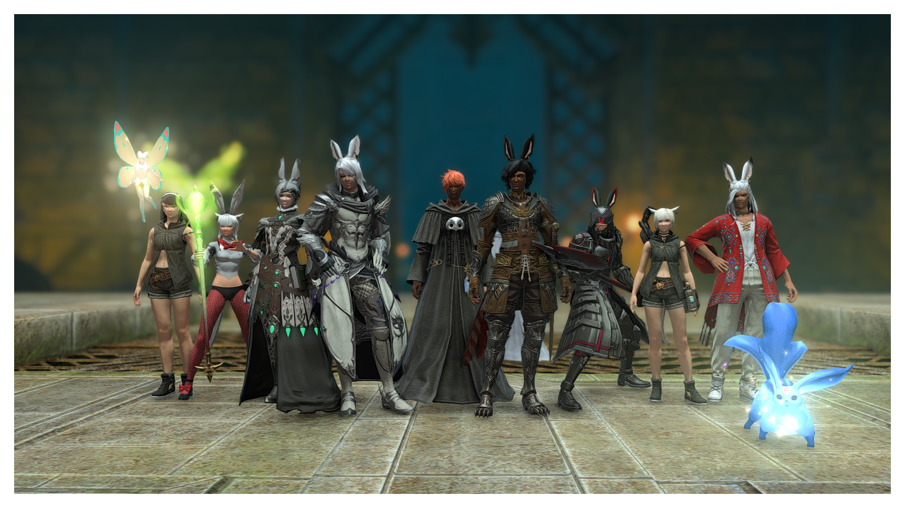

Статик в FFXIV

Как же я люблю СВОЙ СТАТИК 😍💖💖, вот они слева направо:
- Фея Лиды
- Kajin Faikotto
- Yasuko Wind
- Nanami Harunova
- Xlis Alastor
- какой то хрен, не люблю его
- Monos Cuda
- Paul Greyrat
- Alex Sane
- Syrah Hena
- Карбунк Насти
Люблю вас💖💖💖
В нашем статике используются самые мощные💪 из самых редких🐉 жоб:
- Paladin
- Warrior
- White Mage
- Scholar
- Reaper
- Monk
- Summoner
- Machinist
Такой набор жоб позволяет нам выбивать самые высочайшие логи ♿